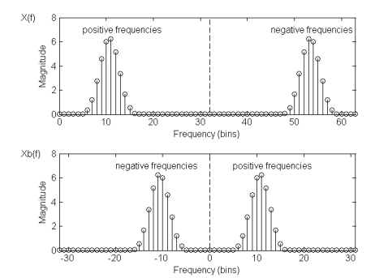

Lab Exercise 2#
The purpose of the second series of exercises is to familiarize with the design functions of finite impulse response (FIR) filters and their implementation in Python & MATLAB.
Tip
Before you start the exercise, you should carefully study Chapter 1 and, in particular, paragraph 1.3 of the course booklet.
Part 1: Training#
Live Code
Press the following button to make python code interactive. It will connect you to a kernel once it says “ready” (might take a bit, especially the first time it runs).
Part 2: Theory#
In MATLAB, the functions \(fft\) and \(ifft\) assume a pair of Fourier transforms \(x(t)\) and \(X(f)\) calculated in non-negative intervals \(t=[0:N-1]ts\) and \(f=[0:N-1]fo. \) As you have already seen in Laboratory Exercise 1, the upper half of the frequency interval corresponds to the negative frequencies of the signal, when calculating \(X(f)\) with the help of the \(fft\) function (for real-valued signals, these two halves are mirror images with respect to the middle of the interval). The same applies to the upper half of the time interval, when the signal \(x(t)\) results from the inverse Fourier transform through \(ifft\).
MATLAB has the \(fftshift\) function to cyclically shift the values of the signal or the Fourier transform so that they correspond to zero-centered bilateral intervals, i.e., at times \(tb=[-ceil((N-1)/2): floor((N-1)/2)]ts\) or frequencies \(fb=[–ceil((N-1)/2): floor((N-1)/2)]fo\). This way, we can produce \(xb(t)\) and \(Xb(f)\) that correspond to the bilateral representation of the signal and the Fourier transform.
To understand the above, consider the vector \([1 2 3 4]\) as the result of a length 4 \(FFT\). Then, the first element (1) is the dc term, the third element (3) is the point at half the sampling frequency \(fs/2\), which can be interpreted as corresponding either to \(–fs/2\) or \(+fs/2\). The elements 2 and 4 correspond to frequencies \(+fs/4\) and \(–fs/4\). By applying \(fftshift\), the element 3 appears first, meaning that in MATLAB it corresponds to the negative frequency \(–fs/2\), the next element 4 corresponds to the frequency \(–fs/4\) followed by the dc and the frequency \(+fs/4\). For an odd-length transformation, there is no point for \(±fs/2\). Thus, for the vector \([1 2 3]\), applying \(fftshift\) will yield the elements corresponding to the frequencies \(–fs/3, 0, +fs/3\).
Besides producing outputs with negative frequencies or times in the upper half of the vector, both \(fft\) and \(ifft\) functions expect as input a vector in the same format, since obviously the identities hold
\(h == \text{ifft}(\text{fft}(h))\) and \(H == \text{fft}(\text{ifft}(H))\)
The first indicates that the input of \(ifft\) should be reversed, as produced by \(fft\), and the second that the input of \(fft\) should be reversed, as produced by \(ifft\).
In the next figure, you see illustratively a sinusoidal signal that has been multiplied by a Blackman window both in the bilateral, and the unilateral representation.

The corresponding Fourier transforms, in bilateral and unilateral representation, are shown in the next figure:
When \(x(t)\) and \(X(f)\) are produced by MATLAB, no special attention is needed, except for the cyclic shift in case, for example, we want to plot the bilateral spectrum or signal. However, when one of \(x(t)\) or \(X(f)\) is defined by the user, more attention is required, because usually, the bilateral signals or spectra are used. You can move from one representation to the other as follows:
\(x = ifftshift(xb)\), \(X = fft(x)\), \(Xb = fftshift(X)\), if you start from a bilateral signal and want to end up with a bilateral spectrum, and
\(X = ifftshift(Xb)\), \(x = ifft(X)\), \(xb = fftshift(x)\), if you start from a bilateral spectrum and want to end up with a bilateral signal,
where the MATLAB function \(ifftshift\) performs the inverse operation of \(fftshift\). When \(N\) is even, \(fftshift\) and \(ifftshift\) yield the same result. However, when \(N\) is odd, this is not the case, and care must be taken in their use. In practice, careful application of the above is important when calculating the phase of the spectrum. The amplitude of the spectrum is not affected by the cyclic shift of elements caused by \(fftshift\) and \(ifftshift\) (see DFT properties).
Exercise#
Try the following in the command window to consolidate the use of the \(fftshift\) and \(ifftshift\) functions.
Code
import numpy as np
# Create the array X
X = np.arange(-2, 3) # equivalent to MATLAB's -2:2
# Apply fftshift and ifftshift
fftshifted_X = np.fft.fftshift(X)
ifftshifted_X = np.fft.ifftshift(X)
# Double fftshift and a combination of fftshift and ifftshift
Y = np.fft.fftshift(np.fft.fftshift(X))
Z = np.fft.ifftshift(np.fft.fftshift(X))
# Check if arrays are equal
X_equals_Y = np.array_equal(X, Y)
X_equals_Z = np.array_equal(X, Z)
print(f"X equals Y: {X_equals_Y}")
print(f"X equals Z: {X_equals_Z}")
X = [-2:2]
fftshift(X)
ifftshift(X)
Y = fftshift(fftshift(X));
Z = ifftshift(fftshift(X));
isequal(X,Y)
isequal(X,Z)
Question 1: Which of the vectors Y and Z equals X? Write your answer in a text file lab2_nnnnn.txt, where nnnnn are the last five numbers of your registration number, using Notepad from the Windows menu (Start → Programs → Accessories → Notepad) and save it in the My Documents folder. You will submit this file electronically at the end, after answering the next questions, so you can leave it open.
Question 2: Repeat with \(X=[-1:2]\). What do you observe? Write your answer in the text file lab2_nnnnn.txt. Try the following two examples in the command window to consolidate the use of the \(fftshift\) and \(ifftshift\) functions in combination with \(fft\) and \(ifft\).
Code
import numpy as np
from scipy.fft import fft, ifft, fftshift, ifftshift
import matplotlib.pyplot as plt
from ipywidgets import interact, Layout
import ipywidgets as widgets
# First part: Original signal and its FFT
xb = np.array([1, 2, 3, 4, 5, 4, 3, 2, 1])
x = ifftshift(xb)
X = fft(x)
Xb = fftshift(X) # Spectrum with DC component in the center
# Second part: Low-pass filter effect
Xb_low_pass = np.array([0, 0, 1, 1, 1, 1, 1, 0, 0])
X_low_pass = ifftshift(Xb_low_pass)
x_low_pass = ifft(X_low_pass)
xb_low_pass = fftshift(x_low_pass.real)
# Function to plot
def plot_signals():
fig1, axs = plt.subplots(2, 2, figsize=(15, 10))
time_range = np.arange(-4, 5)
axs[0, 0].stem(time_range, xb, linefmt='blue', markerfmt='bo', basefmt='r-')
axs[0, 0].set_title('Original Signal')
axs[0, 0].set_xlabel('Time (s)')
axs[0, 0].set_ylabel('Amplitude')
axs[0, 1].stem(time_range, np.abs(Xb), linefmt='red', markerfmt='ro', basefmt='r-')
axs[0, 1].set_title('Magnitude Spectrum')
axs[0, 1].set_xlabel('Frequency (Hz)')
axs[0, 1].set_ylabel('Magnitude')
axs[1, 0].stem(time_range, Xb_low_pass, linefmt='green', markerfmt='go', basefmt='r-')
axs[1, 0].set_title('Low-pass Spectrum')
axs[1, 0].set_xlabel('Frequency (Hz)')
axs[1, 0].set_ylabel('Magnitude')
axs[1, 1].stem(time_range, xb_low_pass, linefmt='purple', markerfmt='mo', basefmt='r-')
axs[1, 1].set_title('Reconstructed Signal')
axs[1, 1].set_xlabel('Time (s)')
axs[1, 1].set_ylabel('Amplitude')
plt.tight_layout()
plt.show()
plot_signals()
close all; clear all;clc;
xb=[1 2 3 4 5 4 3 2 1] % πραγματικό σήμα με άρτια συμμετρία
figure; subplot (2,1,1); plot([-4:4],xb); ylabel('xb');
x=ifftshift(xb) % το σήμα με τις αρνητικές συνιστώσες στο άνω μέρος
X=fft(x) % FFT
Xb=fftshift(X) % το φάσμα με τη dc συνιστώσα στο κέντρο, πραγματικές
% τιμές με άρτια συμμετρία όπως αναμένεται
subplot (2,1,2); plot([-4:4],Xb);ylabel('Xb');
close all; clear all;clc;
Xb=[0 0 1 1 1 1 1 0 0] % φάσμα βαθυπερατού σήματος με άρτια συμμετρία
figure; subplot (2,1,1); plot([-4:4],Xb); ylabel('Xb');
X=ifftshift(Xb) % το φάσμα με τις αρνητικές συνιστώσες στο άνω μέρος
x=ifft(X) % IFFT
xb=fftshift(x) % πραγματικό σήμα με άρτια συμμετρία όπως αναμένεται
subplot (2,1,2); plot([-4:4],xb); ylabel('xb');

Question 3: Modify the previous example so that you start directly with the definition of the spectrum of the low-pass signal \(X\) as expected by the \(ifft\). Write your answer in the text file lab2_nnnnn.txt.
Part 3: Design and implementation of filters#
We will deal with Example 1.2 of paragraph 1.5 of the course’s issue. This example presents two alternative methods for designing FIR filters: a) the window method, and b) the equal ripple method, which it applies in the case of low-pass filters.
Tip
The code in Matlab is included in the course’s book in Example 1.2 (Code 1.3).
In the example, the filters are tested on a real signal, s, which is stored in the file sima.mat (a binary MATLAB file). This is a sonar signal with a spectrum extending up to about 4 KHz and a sampling frequency of Fs=8192 (it is also stored in the sima.mat file, along with the signal). Note that, in the code of the example, the loading of sima.mat (line 6) precedes, allowing the use of the variables s, Fs in the rest of it (lines 7-44).
The Window Method#
The window method is applied in lines 8-38 of the code. The first step is the definition of the frequency response H of an ideal low-pass filter with a cutoff frequency of \(Fs/8\) (line 9), using a vector of length \(N=Fs\), leading to a frequency resolution of \(fo = Fs /N = 1 Hz\). The H vector consists of a sequence of ones and zeros created by calling the \(ones\) and \(zeros\) functions, respectively. For more information about these functions, you can consult MATLAB documentation by typing \(doc\) \(‘function-name’\) in the command window, where \(‘function-name’\) is the name of the function. The first \(Fs/8\) elements of \(H\), corresponding to frequencies \([0,Fs/8)\), are ones, followed by \(3Fs/4\) zeros and another \(Fs/8\) ones corresponding to the frequency band \([–Fs/8, 0)\).
The next step is the calculation of the Inverse Discrete Fourier Transform \(IDFT\), computed by MATLAB’s \(ifft\) function (line 12). This is followed by a rearrangement of the inverse \(DFT\) result (lines 13-14), equivalent to shifting the filter’s impulse response by half its length. Then, the impulse response \(h\) is truncated to lengths of 32+1, 64+1, and 128+1 samples (lines 15-17). With the help of \(wvtool\) (Window Visualization Tool), the impulse response and the frequency response of the low-pass filter for the above lengths are displayed on the same diagram. The \(wvtool\) is a tool similar to \(wintool\) and is used for visualizing windows in both time and frequency domains. Notice that the longer the filter length, the smaller the side lobes in the frequency response. To further reduce these side lobes and the effects of the rectangular window, \(Hamming\) and \(Kaiser\) windows are constructed (via the \(hamming\) and \(kaiser\) functions, respectively, lines 24-25) and applied to the 64+1 point length filter \(h64\) (lines 27-30). Through the \(wvtool\) (line 31), observe the significantly lower level of side lobes in the frequency response of the \(Hamming\) and \(Kaiser\) windows compared to the rectangular one. Finally, the signal s is filtered with each of the three filters (rectangular, \(Hamming\), \(Kaiser\)), using the \(conv()\) function that computes the convolution between the signal and the impulse response of each filter (lines 33-38). Concurrently, the power spectrum density by \(Welch\) is calculated and plotted using the \(pwelch\) function. The result clearly shows a sharp reduction in spectral power for frequencies above \(Fs/8\).
Equal Ripple Method#
The equal ripple method is applied in lines 40-44 of the code for the construction of a \(Parks-McClellan\) filter. The filter is built by calling the \(firpm\) function (line 41). For the definition of the input parameters of \(firpm\), consult MATLAB documentation. The filter’s application to the signal is done in the same way as the previous method, using the \(conv\) function (line 43).
Code
import numpy as np
from scipy.signal import remez, convolve, welch
import matplotlib.pyplot as plt
import scipy.io
import sounddevice as sd
#6
with open('../files/sima.txt') as f:
s = [float(x) for x in f]
s=np.array(s)
Fs=8192
# 7
f, Pxx = scipy.signal.welch(s, Fs)
plt.figure(); plt.semilogy(f, Pxx); plt.grid(True); plt.xlabel('Frequency [Hz]'); plt.ylabel('PSD [V**2/Hz]')
# 8-9
N = Fs // 2 # Adjusted for Python indexing, assuming Fs is even
H = np.concatenate((np.ones(N//4), np.zeros(N//2), np.ones(N//4)))
# 10-14
h = np.fft.ifft(H, n=N).real
h = np.fft.fftshift(h) # Equivalent to MATLAB's circshift for centering the impulse response
# 15-17
h32 = h[N//2-16:N//2+17]
h64 = h[N//2-32:N//2+33]
h128 = h[N//2-64:N//2+65]
# 18 - Stem plot for h64
plt.figure()
plt.stem(range(len(h64)), h64, basefmt=" ")
plt.title('Stem Plot of h64')
plt.xlabel('Samples')
plt.ylabel('Amplitude')
plt.grid()
# 19 - Frequency response of h64
w, h = scipy.signal.freqz(h64)
plt.figure()
plt.plot(w / np.pi * (Fs / 2), np.abs(h)) # Normalizing frequency to Hz
plt.title('Frequency Response of h64')
plt.xlabel('Frequency (Hz)')
plt.ylabel('Magnitude')
plt.grid()
# 20 - For visualizing the frequency responses of h32, h64, and h128 together
plt.figure(figsize=(14, 4))
for filt, label in zip([h32, h64, h128], ['h32', 'h64', 'h128']):
w, h = scipy.signal.freqz(filt)
plt.plot(w / np.pi * (Fs / 2), 20 * np.log10(abs(h)), label=label)
plt.title('Frequency Responses of h32, h64, h128')
plt.xlabel('Frequency (Hz)')
plt.ylabel('Magnitude (dB)')
plt.legend()
plt.grid()
plt.grid(True)
plt.show()
# 22-26
wh = np.hamming(len(h64))
wk = np.kaiser(len(h64), 5)
plt.figure(); plt.plot(wh, 'b', label='Hamming'); plt.plot(wk, 'r', label='Kaiser'); plt.legend(); plt.grid()
# 27-30
h_hamming = h64 * wh
h_kaiser = h64 * wk
# 31 `wvtool` equivalent visualization
# Plot the impulse responses
plt.figure(figsize=(10, 6))
markers, stemlines, baseline = plt.stem(range(len(h64)), h64, linefmt='C0-', markerfmt='C0o', basefmt="C0", label='h64')
plt.setp(markers, markersize = 5) # Adjusting marker size for better visibility
plt.setp(stemlines, linestyle = '-') # Adjusting stem line style
markers, stemlines, baseline = plt.stem(range(len(h_hamming)), h_hamming, linefmt='C1-', markerfmt='C1o', basefmt="C1", label='h_hamming')
plt.setp(markers, markersize = 5)
plt.setp(stemlines, linestyle = '-')
markers, stemlines, baseline = plt.stem(range(len(h_kaiser)), h_kaiser, linefmt='C2-', markerfmt='C2o', basefmt="C2", label='h_kaiser')
plt.setp(markers, markersize = 5)
plt.setp(stemlines, linestyle = '-')
plt.title('Impulse Responses')
plt.xlabel('Samples')
plt.ylabel('Amplitude')
plt.legend()
plt.grid(True)
plt.tight_layout()
plt.show()
# Plot the frequency responses
plt.figure(figsize=(14, 4))
for filt, label, color in zip([h64, h_hamming, h_kaiser], ['h64', 'h_hamming', 'h_kaiser'], ['C0', 'C1', 'C2']):
w, h = scipy.signal.freqz(filt)
plt.plot(w / np.pi * (Fs / 2), 20 * np.log10(abs(h)), label=label, color=color)
plt.title('Frequency Responses')
plt.xlabel('Frequency (Hz)')
plt.ylabel('Magnitude (dB)')
plt.legend()
plt.grid()
plt.show()
# 32-38 Filtering and plotting PSD
y_rect = np.convolve(s, h64, mode='same')
f, Pxx = scipy.signal.welch(y_rect, Fs)
plt.figure();plt.grid(True); plt.semilogy(f, Pxx); plt.xlabel('Frequency [Hz]'); plt.ylabel('PSD [V**2/Hz]'); plt.title('h64')
y_hamm = np.convolve(s, h_hamming, mode='same')
f, Pxx = scipy.signal.welch(y_hamm, Fs)
plt.figure();plt.grid(True); plt.semilogy(f, Pxx); plt.xlabel('Frequency [Hz]'); plt.ylabel('PSD [V**2/Hz]'); plt.title('h_hamming')
y_kais = np.convolve(s, h_kaiser, mode='same')
f, Pxx = scipy.signal.welch(y_kais, Fs)
plt.figure(); plt.grid(True); plt.semilogy(f, Pxx); plt.xlabel('Frequency [Hz]'); plt.ylabel('PSD [V**2/Hz]'); plt.title('h_kaiser')
# 40-44 Parks-McClellan low-pass filter
freq = np.array([0, 0.10, 0.15, 0.5]) * Fs # Scale frequencies correctly
gain = [1, 1, 0, 0]
# Call firwin2 with corrected parameters and using the `fs` parameter
hpm = signal.firwin2(65, freq, gain, fs=Fs)
s_pm = np.convolve(s, hpm, 'same')
# Plotting or analyzing the filtered signals (y_rect, y_hamm, y_kais, s_pm) can be done similarly
# For example, to plot the PSD:
f, Pxx_spec = signal.welch(s_pm, Fs, 'flattop', 1024, scaling='spectrum')
plt.figure()
plt.semilogy(f, np.sqrt(Pxx_spec))
plt.xlabel('frequency [Hz]')
plt.grid(True)
plt.ylabel('Linear spectrum [V RMS]')
plt.title('Power spectrum (welch)')
plt.show()
# 45-46 Playing sound (s and s_pm assumed as original and filtered signal)
sd.play(20 * s, Fs); sd.wait()
# sd.play(20 * s_lp, Fs); sd.wait() # Uncomment and adjust variable name as needed for the filtered signal
1. clear all; close all;
2. % Το αρχείο "sima.mat" περιέχει το σήμα s και τη συχνότητα
3. % δειγματοληψίας Fs. Το φάσμα του σήματος εκτείνεται σχεδόν σε όλη την
4. % περιοχή συχνοτήτων μέχρι 4 KHz. Πάνω από 1 KHz, όμως, είναι θόρυβος
5. % και πρέπει να φιλτραριστεί.
6. load sima;
7. figure; pwelch(s,[],[],[],Fs);
8. % Ορίζεται η ιδανική βαθυπερατή συνάρτηση Η, με συχνότ. αποκοπ. Fs/8
9. H=[ones(1,Fs/8) zeros(1,Fs-Fs/4) ones(1,Fs/8)];
10. % Υπολογίζεται η κρουστική απόκριση με αντίστροφο μετασχ. Fourier
11. % Εναλλακτικά, μπορεί να χρησιμοποιηθεί η αναλυτική σχέση Sa(x)
12. h=ifft(H,'symmetric');
13. middle=length(h)/2;
14. h=[h(middle+1:end) h(1:middle)];
15. h32=h(middle+1-16:middle+17);
16. h64=h(middle+1-32:middle+33);
17. h128=h(middle+1-64:middle+65);
18. % figure; stem([0:length(h64)-1],h64); grid;
19. % figure; freqz(h64,1); % σχεδιάζουμε την απόκριση συχνότητας της h64
20. wvtool(h32,h64,h128); % αποκρίσεις συχνότητας των περικομμένων h
21. % Οι πλευρικοί λοβοί είναι υψηλοί!
22. % Πολλαπλασιάζουμε την περικομμένη κρουστική απόκριση με κατάλληλο
23. % παράθυρο. Χρησιμοποιούμε την h64 και παράθυρα hamming και kaiser
24. wh=hamming(length(h64));
25. wk=kaiser(length(h64),5);
26. figure; plot(0:64,wk,'r',0:64,wh,'b'); grid;
27. h_hamming=h64.*wh';
28. % figure; stem([0:length(h64)-1],h_hamming); grid;
29. % figure; freqz(h_hamming,1);
30. h_kaiser=h64.*wk';
31. wvtool(h64,h_hamming,h_kaiser);
32. % Φιλτράρουμε το σήμα μας με καθένα από τα τρία φίλτρα
33. y_rect=conv(s,h64);
34. figure; pwelch(y_rect,[],[],[],Fs);
35. y_hamm=conv(s,h_hamming);
36. figure; pwelch(y_hamm,[],[],[],Fs);
37. y_kais=conv(s,h_kaiser);
38. figure; pwelch(y_kais,[],[],[],Fs);
39. %
40. % Βαθυπερατό Parks-MacClellan
41. hpm=firpm(64, [0 0.10 0.15 0.5]*2, [1 1 0 0]);
42. % figure; freqz(hpm,1);
43. s_pm=conv(s,hpm);
44. figure; pwelch(s_pm,[],[],[],Fs);
45. sound(20*s); % ακούμε το αρχικό σήμα, s
46. sound(20*s_lp); % ακούμε το φιλτραρισμένο σήμα, s_lp

<Figure size 1400x400 with 0 Axes>


---------------------------------------------------------------------------
AttributeError Traceback (most recent call last)
Cell In[5], line 129
126 gain = [1, 1, 0, 0]
128 # Call firwin2 with corrected parameters and using the `fs` parameter
--> 129 hpm = signal.firwin2(65, freq, gain, fs=Fs)
130 s_pm = np.convolve(s, hpm, 'same')
132 # Plotting or analyzing the filtered signals (y_rect, y_hamm, y_kais, s_pm) can be done similarly
133 # For example, to plot the PSD:
AttributeError: 'numpy.ndarray' object has no attribute 'firwin2'

Experiment#
Modify the code on line 14 to achieve the same result using either the ifftshift or fftshift functions.
Modify the code to use a low-pass filter of length 140+1 instead of 64+1. Plot the frequency response of the filter with window design, as in the example, for two cases: rectangular and Hamming.
Rectangular Window (simple truncation of h)#
%matplotlib inline
import ipywidgets as widgets
from IPython.display import display, clear_output
import matplotlib.pyplot as plt
import numpy as np
# Assuming H is defined and calculated as before
H = np.hstack((np.ones(int(Fs/8)), np.zeros(int(Fs-Fs/4)), np.ones(int(Fs/8))))
h = np.real(np.fft.ifft(H))
middle = int(len(h)/2)
h = np.hstack((h[middle:], h[:middle]))
h32 = h[middle-16:middle+16]
h64 = h[middle-32:middle+32]
h128 = h[middle-64:middle+64]
h160 = h[middle-80:middle+80]
h256 = h[middle-128:middle+128]
h_variants = {
'h32': h[middle-16:middle+16],
'h64': h[middle-32:middle+32],
'h128': h[middle-64:middle+64],
'h160': h[middle-80:middle+80],
'h256': h[middle-128:middle+128],
}
output2 = widgets.Output()
output2.layout = Layout(width='auto', margin='0 auto')
# Function to plot
def plot_stem(h_key):
with output2:
clear_output(wait=True) # Clear the previous plots
h_data = h_variants[h_key]
x_values = np.arange(len(h_data))
plt.close('all') # Close all existing figures
fig, ax = plt.subplots()
markerline, stemlines, baseline = ax.stem(x_values, h_data, '-.')
plt.setp(baseline, 'color', 'k', 'linewidth', 2)
plt.title('Stem plot of selected filter')
plt.xlabel('Index')
plt.ylabel('Amplitude')
plt.show()
# HTML Label
html_label = widgets.HTML(
value="<h2 style='font-weight: bold; font-size: 30px; text-align: center;'>Filter Visualization</h2>"
)
# Setup the widgets
dropdown = widgets.Dropdown(options=list(h_variants.keys()), value='h32', description='Filter:')
# Function that updates the plot based on dropdown
def update_plot(change):
plot_stem(change['new'])
# Observe dropdown for changes
dropdown.observe(update_plot, names='value')
# VBox layout to align items
vbox_layout = Layout(display='flex', flex_flow='column', align_items='center', justify_content='space-between')
ui = widgets.VBox([html_label, dropdown], layout=vbox_layout)
# Group the dropdown, output widget, and HTML label in a vertical box layout
vbox_final = widgets.VBox([ui, output2])
# Display the final VBox
display(vbox_final)
# Initial call to display the plot
plot_stem(dropdown.value) # Use the dropdown's value
%matplotlib inline
import numpy as np
import matplotlib.pyplot as plt
from scipy import signal
import ipywidgets as widgets
from IPython.display import display
# Compute frequency responses
freq32, resp32 = signal.freqz(h32)
freq64, resp64 = signal.freqz(h64)
freq128, resp128 = signal.freqz(h128)
freq160, resp160 = signal.freqz(h160)
freq256, resp256 = signal.freqz(h256)
# Function to apply window and compute frequency responses
def compute_filtered_freq_responses(window_type='Rectangular'):
freqs, resps = {}, {}
for filt_size in [32, 64, 128, 160, 256]:
filt_name = f'h{filt_size}'
filt = eval(filt_name)
if window_type == 'Hamming':
filt = filt * np.hamming(filt_size)
elif window_type == 'Kaiser':
beta = 14 # Example beta value for Kaiser window, adjust as needed
filt = filt * np.kaiser(filt_size, beta)
freqs[filt_name], resps[filt_name] = signal.freqz(filt)
return freqs, resps
# Initial computation with Rectangular (no window)
freqs, resps = compute_filtered_freq_responses()
output3 = widgets.Output()
output3.layout = Layout(width='auto', margin='0 auto')
def update_plot1(change=None):
window_type = window_type_dropdown.value
freqs, resps = compute_filtered_freq_responses(window_type)
with output3:
clear_output(wait=True)
plt.figure(figsize=(10, 5))
for filt in ['h32', 'h64', 'h128', 'h160', 'h256']:
if checkboxes1[filt].value:
w, h = freqs[filt], resps[filt]
plt.plot(0.5 * Fs * w / np.pi, 20 * np.log10(np.abs(h)), label=filt)
plt.title(f'Frequency Response with {window_type} Window')
plt.xlabel('Frequency (Hz)')
plt.ylabel('Magnitude (dB)')
plt.xscale('linear')
plt.grid(True)
plt.legend()
plt.show()
# Create checkboxes for each filter
checkboxes1 = {f'h{size}': widgets.Checkbox(value=True, description=f'h{size}') for size in [32, 64, 128, 160, 256]}
for cb in checkboxes1.values():
cb.observe(update_plot1, names='value')
# Dropdown for selecting the window type
window_type_dropdown = widgets.Dropdown(
options=['Rectangular', 'Hamming'],
value='Rectangular',
description='Window Type:',
)
window_type_dropdown.observe(update_plot1, names='value')
# HTML Label
html_label = widgets.HTML(
value="<h2 style='font-weight: bold; font-size: 30px; text-align: center;'>Filter Frequency Response Visualization</h2>"
)
# VBox layout to align items
vbox_layout = Layout(display='flex', flex_flow='column', align_items='center', justify_content='space-between')
vbox_checkboxes = widgets.VBox(list(checkboxes1.values()) + [window_type_dropdown], layout=vbox_layout)
# Combine everything into a final VBox with the layout
vbox_final = widgets.VBox([html_label, vbox_checkboxes, output3], layout=vbox_layout)
# Display the final layout
display(vbox_final)
# Initial plot update to show default visualization
update_plot1()
Design a Parks-McClellan filter of length 160+1, with the same edge frequencies as in the example (0.1, 0.15). Plot the frequency response of this filter and comment on the differences from the same filter of length 64+1 (from Example 1.2). Write your answer in the text file lab2_nnnnn.txt.
%matplotlib inline
import numpy as np
import matplotlib.pyplot as plt
from scipy import signal
import ipywidgets as widgets
from IPython.display import display, clear_output
filters = {
'Equiripple Filter 32+1': signal.remez(33, [0, 0.1*Fs, 0.15*Fs, 0.5*Fs], [1, 0], Hz=Fs),
'Equiripple Filter 64+1': signal.remez(65, [0, 0.1*Fs, 0.15*Fs, 0.5*Fs], [1, 0], Hz=Fs),
'Equiripple Filter 128+1': signal.remez(129, [0, 0.1*Fs, 0.15*Fs, 0.5*Fs], [1, 0], Hz=Fs),
'Equiripple Filter 160+1': signal.remez(161, [0, 0.1*Fs, 0.15*Fs, 0.5*Fs], [1, 0], Hz=Fs),
'Equiripple Filter 256+1': signal.remez(257, [0, 0.1*Fs, 0.15*Fs, 0.5*Fs], [1, 0], Hz=Fs)
}
output_plot2 = widgets.Output()
output_plot2.layout = Layout(width='auto', margin='0 auto')
# Function to update the plot based on selected filters
def update_plot2(change=None):
selected_filters = [cb.description for cb in checkboxes2 if cb.value]
with output_plot2:
clear_output(wait=True)
plt.figure(figsize=(10, 5))
for filter_name in selected_filters:
filter_coeffs = filters[filter_name]
w, h = signal.freqz(filter_coeffs, worN=8000)
plt.semilogy(w * Fs / (2 * np.pi), np.abs(h), label=filter_name)
plt.title('Frequency Response')
plt.xlabel('Frequency (Hz)')
plt.ylabel('Gain')
plt.legend()
plt.grid(True)
plt.show()
checkboxes2 = [widgets.Checkbox(value=True, description=name) for name in filters.keys()]
for cb in checkboxes2:
cb.observe(update_plot2, names='value')
# HTML Label
html_label = widgets.HTML(
value="<h2 style='font-weight: bold; font-size: 30px; text-align: center;'>Equiripple Filter Frequency Response</h2>"
)
# VBox layout to align items
vbox_layout = Layout(display='flex', flex_flow='column', align_items='center', justify_content='space-between')
vbox_checkboxes = widgets.VBox([widgets.Label('Select Equiripple Filter Length:')] + checkboxes2, layout=vbox_layout)
# Combine everything into a final VBox with the layout
vbox_final = widgets.VBox([html_label, vbox_checkboxes, output_plot2], layout=vbox_layout)
# Display the final layout
display(vbox_final)
# Initial plot update to show default visualization
update_plot2()
Change the edge frequencies of the filter from question 3 to (0.11, 0.12) and compare the frequency responses of the two filters. Save the diagrams and write your comments in the text file lab2_nnnnn.txt.
%matplotlib inline
import numpy as np
import matplotlib.pyplot as plt
from scipy import signal
import ipywidgets as widgets
from IPython.display import display, clear_output
filters3 = {
'Equiripple Filter 32+1': signal.remez(33, [0, 0.11*Fs, 0.12*Fs, 0.5*Fs], [1, 0], Hz=Fs),
'Equiripple Filter 64+1': signal.remez(65, [0, 0.11*Fs, 0.12*Fs, 0.5*Fs], [1, 0], Hz=Fs),
'Equiripple Filter 128+1': signal.remez(129, [0, 0.11*Fs, 0.12*Fs, 0.5*Fs], [1, 0], Hz=Fs),
'Equiripple Filter 160+1': signal.remez(161, [0, 0.11*Fs, 0.12*Fs, 0.5*Fs], [1, 0], Hz=Fs),
'Equiripple Filter 256+1': signal.remez(257, [0, 0.11*Fs, 0.12*Fs, 0.5*Fs], [1, 0], Hz=Fs)
}
output_plot3 = widgets.Output()
# Function to update the plot based on selected filters
def update_plot3(change=None):
selected_filters = [cb.description for cb in checkboxes3 if cb.value]
with output_plot3:
clear_output(wait=True)
plt.figure(figsize=(10, 5))
for filter_name in selected_filters:
filter_coeffs = filters3[filter_name]
w, h = signal.freqz(filter_coeffs, worN=8000)
plt.semilogy(w * Fs / (2 * np.pi), np.abs(h), label=filter_name)
plt.title('Frequency Response')
plt.xlabel('Frequency (Hz)')
plt.ylabel('Gain')
plt.legend()
plt.grid(True)
plt.show()
checkboxes3 = [widgets.Checkbox(value=True, description=name) for name in filters.keys()]
for cb in checkboxes3:
cb.observe(update_plot3, names='value')
# HTML Label
html_label3 = widgets.HTML(
value="<h2 style='font-weight: bold; font-size: 30px; text-align: center;'>Equiripple Filter Frequency Response</h2>"
)
# VBox layout to align items
vbox_layout3 = Layout(display='flex', flex_flow='column', align_items='center', justify_content='space-between')
vbox_checkboxes3 = widgets.VBox([widgets.Label('Select Equiripple Filter Length:')] + checkboxes3, layout=vbox_layout3)
# Combine everything into a final VBox with the layout
vbox_final3 = widgets.VBox([html_label3, vbox_checkboxes3, output_plot3], layout=vbox_layout3)
# Display the final layout
display(vbox_final3)
# Initial plot update to show default visualization
update_plot3()
Filter Application#
%matplotlib inline
import numpy as np
import matplotlib.pyplot as plt
from scipy import signal
from scipy.io.wavfile import write
from IPython.display import display, Audio, clear_output
import ipywidgets as widgets
import io
lp_filtersl = {
'lpass32': signal.remez(33, [0, 0.1*Fs, 0.15*Fs, 0.5*Fs], [1, 0], Hz=Fs),
'lpass64': signal.remez(65, [0, 0.1*Fs, 0.15*Fs, 0.5*Fs], [1, 0], Hz=Fs),
'lpass128': signal.remez(129, [0, 0.1*Fs, 0.15*Fs, 0.5*Fs], [1, 0], Hz=Fs),
'lpass160': signal.remez(161, [0, 0.1*Fs, 0.15*Fs, 0.5*Fs], [1, 0], Hz=Fs),
'lpass256': signal.remez(257, [0, 0.1*Fs, 0.15*Fs, 0.5*Fs], [1, 0], Hz=Fs)
}
# Prepare audio data
audio_data = {}
for name, lp_filter_coeffs in lp_filtersl.items():
# Apply the filter to the signal
s_lp_filtered = signal.convolve(s, lp_filter_coeffs, mode='same') / np.sum(lp_filter_coeffs)
# Normalize the filtered signal to prevent clipping
s_lp_filtered_normalized = np.int16((s_lp_filtered / np.max(np.abs(s_lp_filtered))) * 32767)
# Write to an in-memory file
audio_buf = io.BytesIO()
write(audio_buf, Fs, s_lp_filtered_normalized)
audio_buf.seek(0) # Go back to the beginning of the BytesIO object
# Store the audio buffer
audio_data[name] = audio_buf
# Function to display the frequency response of the filtered signal
def plot_freq_response(filter_name):
with plot_output:
clear_output(wait=True)
# Apply the filter to the original signal
s_lp_filtered = signal.convolve(s, lp_filtersl[filter_name], mode='same') / np.sum(lp_filtersl[filter_name])
# Calculate FFT
freqs = np.fft.rfftfreq(len(s_lp_filtered), 1/Fs)
fft_mag = np.abs(np.fft.rfft(s_lp_filtered))
# Convert magnitude to dB
fft_mag_db = 20 * np.log10(fft_mag)
plt.figure(figsize=(10, 5))
plt.plot(freqs, fft_mag_db)
plt.title(f'Frequency Response of Filtered Signal with {filter_name}')
plt.xlabel('Frequency (Hz)')
plt.ylabel('Magnitude (dB)')
plt.grid(True)
plt.xlim(0, Fs/2)
plt.show()
# Audio playback function
def show_audio_player(filter_name):
with audio_output:
clear_output(wait=True)
display(Audio(data=audio_data[filter_name].getvalue(), rate=Fs))
# Widget setup
filter_dropdown = widgets.Dropdown(
options=[(name, name) for name in lp_filtersl.keys()],
value='lpass32',
description='Filter:'
)
plot_output = widgets.Output()
audio_output = widgets.Output()
def on_filter_change(change):
filter_name = change['new']
plot_freq_response(filter_name)
show_audio_player(filter_name)
filter_dropdown.observe(on_filter_change, names='value')
# HTML Label for enhanced UI
html_label = widgets.HTML(
value="<h2 style='font-weight: bold; font-size: 30px; text-align: center;'>Low Pass Filter Application and Audio Playback</h2>"
)
# VBox layout for alignment and presentation
vbox_layout = widgets.Layout(display='flex', flex_flow='column', align_items='center', justify_content='space-between')
vbox_final5 = widgets.VBox([html_label, filter_dropdown, plot_output, audio_output], layout=vbox_layout)
# Display the final layout
display(vbox_final5)
# Initialize
on_filter_change({'new': filter_dropdown.value})
Replace the signal s with the sum of four sinusoidal functions of unit amplitude, frequencies 700, 900, 1400, and 2500 Hz, and duration of 1.0 sec. Keep the same Fs = 8192 Hz. Plot the spectral density of the signal (with pwelch) and observe the result of filtering with the two Parks-McClellan filters from questions 3 and 4. Save the spectral diagrams in the text file lab2_nnnnn.txt.
Part 4: Application A#
Question 1#
Execute Exercise 1.2 of paragraph 1.6 of the course’s issue, appropriately modifying the code from Example 1.2 (which you have saved in the file lab2_1_nnnnn.m). The purpose of the exercise is the design of a band-pass filter with a passband of (0.6 KHz, 1.1 KHz) using the two methods described above and their application to the signal s from Example 1.2 (also see Example 2 at the end of the presentation “DSP in Telecommunications”). Verify the correct design of your filter by checking both its frequency response and the result of filtering on the signal s.
Code
import numpy as np
from scipy.signal import convolve, kaiser, welch, freqz
import matplotlib.pyplot as plt
# Sample values for f1 and f2, replace with your desired frequencies
f1 = 600
f2 = 1100
def process_signal(f1, f2):
# Load the signal from a file
with open('../files/sima.txt') as f:
s = [float(x) for x in f]
s = np.array(s)
Fs = 8192 # Sampling frequency
f2m1 = f2 - f1
f2p1 = (f2 + f1) / 2
N = 256
Ts = 1 / Fs
t = np.arange(-(N - 1), N, 2) * Ts / 2
# Bandpass filter
hbp = 2 / Fs * np.cos(2 * np.pi * f2p1 * t) * np.sinc(f2m1 * t)
hbpw = hbp * kaiser(len(hbp), 5)
# Compute frequency responses
w, h = freqz(hbp, worN=8000)
w_w, h_w = freqz(hbpw, worN=8000)
fs = Fs # Sampling frequency for normalization
# Plotting
fig, axs = plt.subplots(1, 2, figsize=(14, 4))
axs[0].plot(hbp, label='Bandpass Filter', color='b')
axs[0].plot(hbpw, label='Windowed Bandpass Filter', color='r')
axs[0].legend()
axs[0].grid(True)
axs[1].plot(w / np.pi * (fs / 2), 20 * np.log10(abs(h)), label='Bandpass Filter', color='b')
axs[1].plot(w_w / np.pi * (fs / 2), 20 * np.log10(abs(h_w)), label='Windowed Bandpass Filter', color='r')
axs[1].legend()
axs[1].grid(True)
plt.tight_layout()
plt.show()
# Convolution with the signal
sima_bp = convolve(s, hbp, mode='same')
sima_bpw = convolve(s, hbpw, mode='same')
# Power Spectral Density
fig, axs = plt.subplots(1, 2, figsize=(14, 4))
f, Pxx = welch(sima_bp, Fs, nperseg=1024)
axs[0].semilogy(f, Pxx)
f, Pxx = welch(sima_bpw, Fs, nperseg=1024)
axs[1].semilogy(f, Pxx)
plt.tight_layout()
plt.show()
# Call process_signal with your values
process_signal(f1, f2)
%% Bandpass FIR filter – closed-form and windowing
clear all; close all;
load sima; % Fs=8192;
f1=800; f2=1600;
Ts=1/Fs;
f2m1=(f2-f1); f2p1=(f2+f1)/2; N=256; %
t=[-(N-1):2:N-1]*Ts/2;
hbp=2/Fs*cos(2*pi*f2p1*t).*sin(pi*f2m1*t)/pi./t;
hbpw=hbp.*kaiser(length(hbp),5)';
wvtool(hbp,hbpw);
sima_bp=conv(s,hbp);
figure; pwelch(sima_bp,[],[],[],Fs);
sima_bpw=conv(s,hbpw);
figure; pwelch(sima_bpw,[],[],[],Fs);
import ipywidgets as widgets
from IPython.display import display
import numpy as np
from scipy.signal import convolve, kaiser, welch, remez
from scipy.io import loadmat
from scipy.signal import freqz
import matplotlib.pyplot as plt
f1_input1 = widgets.IntText(value=600, description='f1 (Hz):', continuous_update=False)
f2_input1 = widgets.IntText(value=1100, description='f2 (Hz):', continuous_update=False)
# Define a button
button = widgets.Button(description="Process Signal")
# Define an output area for the plots
plot_output = widgets.Output()
def process_signal(f1, f2):
with plot_output:
# Clear the previous figures
plot_output.clear_output(wait=True)
plt.close('all') # Close all existing figures to prevent memory leaks
with open('../files/sima.txt') as f:
s = [float(x) for x in f]
s=np.array(s)
Fs=8192
f2m1 = f2 - f1
f2p1 = (f2 + f1) / 2
N = 256
Ts = 1 / Fs
t = np.arange(-(N - 1), N, 2) * Ts / 2
# Bandpass filter
hbp = 2 / Fs * np.cos(2 * np.pi * f2p1 * t) * np.sinc(f2m1 * t)
hbpw = hbp * kaiser(len(hbp), 5)
# Compute frequency responses
w, h = freqz(hbp, worN=8000)
w_w, h_w = freqz(hbpw, worN=8000)
fs = Fs # Sampling frequency for normalization
# Creating a figure and a 1x2 subplot layout
fig, axs = plt.subplots(1, 2, figsize=(14, 4))
# Plotting the impulse responses on the first subplot
axs[0].plot(hbp, label='Bandpass Filter', color='b')
axs[0].plot(hbpw, label='Windowed Bandpass Filter', color='r')
axs[0].set_title('Impulse Responses')
axs[0].set_xlabel('Sample')
axs[0].set_ylabel('Amplitude')
axs[0].legend()
axs[0].grid(True)
# Plotting the frequency responses on the second subplot
axs[1].plot(w / np.pi * (fs / 2), 20 * np.log10(abs(h)), label='Bandpass Filter', color='b')
axs[1].plot(w_w / np.pi * (fs / 2), 20 * np.log10(abs(h_w)), label='Windowed Bandpass Filter', color='r')
axs[1].set_title('Frequency Responses')
axs[1].set_xlabel('Frequency [Hz]')
axs[1].set_ylabel('Magnitude [dB]')
axs[1].legend()
axs[1].grid(True)
# Adjust the layout so that the plots do not overlap
plt.tight_layout()
plt.show()
# Convolution with the signal
sima_bp = convolve(s, hbp, mode='same')
sima_bpw = convolve(s, hbpw, mode='same')
fig, axs = plt.subplots(1, 2, figsize=(14, 4))
# Plotting the Power Spectral Density
f, Pxx = welch(sima_bp, Fs, nperseg=1024)
axs[0].semilogy(f, Pxx)
axs[0].set_title('Power Spectral Density of Bandpass Filtered Signal')
axs[0].set_xlabel('Frequency [Hz]')
axs[0].set_ylabel('PSD [V**2/Hz]')
f, Pxx = welch(sima_bpw, Fs, nperseg=1024)
axs[1].semilogy(f, Pxx)
axs[1].set_title('Power Spectral Density of Windowed Bandpass Filtered Signal')
axs[1].set_xlabel('Frequency [Hz]')
axs[1].set_ylabel('PSD [V**2/Hz]')
plt.tight_layout()
plt.show()
def on_button_clicked(b):
# Call your signal processing function with the current values of f1 and f2
process_signal(f1_input1.value, f2_input1.value)
button.on_click(on_button_clicked)
# Display widgets
ui_layout = widgets.VBox([f1_input1, f2_input1, button, plot_output])
display(ui_layout)
# Call process_signal initially with the default or initial values
process_signal(f1_input1.value, f2_input1.value)
Code
import numpy as np
from scipy.signal import freqz, convolve, welch, firwin2
import matplotlib.pyplot as plt
def process_signal_without_widgets(f1=600, f2=1100):
# Design the bandpass FIR filter with the given f1 and f2 values
freq11 = np.array([0, f1 * 0.95, f1 * 1.05, f2 * 0.95, f2 * 1.05, Fs / 2]) / (Fs / 2)
gain = [0, 0, 1, 1, 0, 0]
hbp_pm = firwin2(129, freq11, gain)
# Compute the frequency response of the filter
w, h = freqz(hbp_pm, worN=8000, fs=Fs)
# Plotting
fig, axs = plt.subplots(1, 3, figsize=(14, 4))
# Impulse Response
axs[0].plot(hbp_pm)
axs[0].set_title('Impulse Response')
axs[0].set_xlabel('Sample')
axs[0].set_ylabel('Amplitude')
# Frequency Response
axs[1].plot(w, 20 * np.log10(abs(h)))
axs[1].set_title('Frequency Response of the Bandpass FIR Filter')
axs[1].set_xlabel('Frequency [Hz]')
axs[1].set_ylabel('Magnitude [dB]')
# Convolve the signal with the filter coefficients
s_pm = convolve(s, hbp_pm, 'same')
# Power Spectral Density (PSD)
f, Pxx_spec = welch(s_pm, Fs, 'flattop', 1024, scaling='spectrum')
axs[2].semilogy(f, np.sqrt(Pxx_spec))
axs[2].set_xlabel('Frequency [Hz]')
axs[2].set_ylabel('Linear spectrum [V RMS]')
axs[2].set_title('Power spectrum (Welch)')
plt.tight_layout()
plt.show()
# Call the function with your desired f1 and f2 values
process_signal_without_widgets(600, 1100)
%% Bandpass FIR filter –
%% Equiripple design (Parks Mc Clellan)
clear all; close all;
load sima; % Fs=8192;
f1=800; f2=1600;
f=2*[0 f1*0.95 f1*1.05 f2*0.95 f2*1.05 Fs/2]/Fs;
hbp_pm=firpm(128, f, [0 0 1 1 0 0]);
% figure; freqz(hpm,1);
wvtool(hbp_pm);
sima_bp=conv(s,hbp_pm);
figure; pwelch(sima_bp,[],[],[],Fs);
import ipywidgets as widgets
from IPython.display import display
import numpy as np
from scipy.signal import freqz, convolve, welch, firwin2
import matplotlib.pyplot as plt
from scipy import signal
# Define the interactive widgets
f1_input2 = widgets.IntText(value=600, description='f1 (Hz):', continuous_update=False)
f2_input2 = widgets.IntText(value=1100, description='f2 (Hz):', continuous_update=False)
process_button = widgets.Button(description="Process Signal")
output_area = widgets.Output()
# Load your signal here (use an example or mock if necessary)
s = np.random.randn(5000) # Example signal; replace with file loading outside the function
Fs = 8192 # Sampling frequency
def process_signal2(btn=None):
# Read the values from the input widgets
f1, f2 = f1_input2.value, f2_input2.value
# Design the bandpass FIR filter with the new f1 and f2 values
freq11 = np.array([0, f1 * 0.95, f1 * 1.05, f2 * 0.95, f2 * 1.05, Fs / 2]) / (Fs / 2)
gain = [0, 0, 1, 1, 0, 0]
hbp_pm = firwin2(129, freq11, gain)
# Compute the frequency response of the filter
w, h = freqz(hbp_pm, worN=8000, fs=Fs)
# Use the output widget to manage the plots
with output_area:
output_area.clear_output(wait=True) # Clear the previous plots
fig, axs = plt.subplots(1, 3, figsize=(14, 4))
# Plot the impulse response
axs[0].plot(hbp_pm, label='Windowed Bandpass Filter')
axs[0].set_title('Impulse Response')
axs[0].set_xlabel('Sample')
axs[0].set_ylabel('Amplitude')
axs[0].legend()
axs[0].grid(True)
# Plot the frequency response
axs[1].plot(w, 20 * np.log10(abs(h)))
axs[1].set_title('Frequency Response of the Bandpass FIR Filter')
axs[1].set_xlabel('Frequency [Hz]')
axs[1].set_ylabel('Magnitude [dB]')
axs[1].grid(True)
# Convolve the signal with the filter coefficients
s_pm = np.convolve(s, hbp_pm, 'same')
# Plot the Power Spectral Density (PSD) of the filtered signal
f, Pxx_spec = welch(s_pm, Fs, 'flattop', 1024, scaling='spectrum')
axs[2].semilogy(f, np.sqrt(Pxx_spec))
axs[2].set_xlabel('frequency [Hz]')
axs[2].set_ylabel('Linear spectrum [V RMS]')
axs[2].set_title('Power spectrum (Welch)')
axs[2].grid(True)
plt.tight_layout()
plt.show()
# Set the button click action
process_button.on_click(process_signal2)
# Layout the widgets and output area
widgets_layout = widgets.VBox([f1_input2, f2_input2, process_button, output_area])
# Display the layout
display(widgets_layout)
process_signal2()
Question 2#
For the bandpass filter from question 1 above, using the Parks-McClellan method, select an appropriate filter order to achieve at least 60 dB attenuation in the stop bands. Apply this filter to the four sine wave signal from question 5 of Part B.
from scipy.signal import remez, freqz
import numpy as np
import matplotlib.pyplot as plt
Fs = 8192 # Συχνότητα δειγματοληψίας
f1, f2 = 600, 1100 # Ζώνες διέλευσης
delta_f = 50 # Περιθώριο στις ζώνες αποκοπής για να διασφαλιστεί η επιθυμητή απόσβεση
# Καθορισμός των ζωνών για το φίλτρο
# Η δομή είναι [0, f_stop1, f_pass1, f_pass2, f_stop2, Fs/2]
bands = [0, f1 - delta_f, f1, f2, f2 + delta_f, 0.5*Fs]
# Επιθυμητές τιμές στις ζώνες: 0 για τις ζώνες αποκοπής και 1 για τις ζώνες διέλευσης
desired = [0, 1, 0]
# Καθορισμός των βαρών για κάθε ζώνη, ώστε να δώσουμε περισσότερη έμφαση στις ζώνες αποκοπής
weights = [100, 1, 100]
# Εκτίμηση του αριθμού των taps (τάξη του φίλτρου). Μπορεί να χρειαστεί προσαρμογή για βελτιστοποίηση.
numtaps = 400
# Σχεδιασμός του φίλτρου FIR με την εντολή remez
filter_taps = remez(numtaps, bands, desired, weight=weights, fs=Fs)
# Υπολογισμός της απόκρισης συχνότητας του φίλτρου
w, h = freqz(filter_taps, worN=8000, fs=Fs)
# Εμφάνιση της απόκρισης συχνότητας
plt.figure(figsize=(14, 4))
plt.plot(w, 20 * np.log10(abs(h)), label="Bandpass Filter")
plt.title('Frequency Response')
plt.xlabel('Frequency [Hz]')
plt.ylabel('Magnitude [dB]')
plt.grid(True)
plt.axhline(-60, color='red', linestyle='--', label="60 dB Attenuation", linewidth=1)
plt.legend()
plt.show()

Part 5: Application B4#
Design and implement in MATLAB a filter, as in Application A, with two passbands: (0 Hz, 500 Hz) and (1100 Hz, 3000 Hz).
from scipy.signal import firwin2, freqz
import numpy as np
import matplotlib.pyplot as plt
Fs = 8192 # Sampling frequency
# Define our target frequency response.
# We want to pass frequencies between 0-500 Hz and 1100-3000 Hz.
target_freqs = [0, 400, 500, 1100, 1200, 2900, 3000, Fs/2]
target_response = [1, 1, 0, 0, 1, 1, 0, 0] # 1 in passbands, 0 in stopbands
# Trying with an increased filter order
numtaps = 350 # Adjust the filter order as needed
# Design the FIR filter using the firwin2 function
filter_taps = firwin2(numtaps, target_freqs, target_response, fs=Fs)
# Calculate the frequency response of the filter
w, h = freqz(filter_taps, worN=2000, fs=Fs)
# Display the frequency response
plt.figure(figsize=(14, 4))
plt.plot(w, 20 * np.log10(abs(h)), label="Bandpass Filter with firwin2")
plt.title('Frequency Response')
plt.xlabel('Frequency [Hz]')
plt.ylabel('Magnitude [dB]')
plt.grid(True)
plt.axhline(-60, color='red', linestyle='--', label="60 dB Attenuation", linewidth=1)
plt.axvline(500, color='green', linestyle='--', label="500 Hz", linewidth=1)
plt.axvline(1100, color='green', linestyle='--', label="1100 Hz", linewidth=1)
plt.axvline(3000, color='green', linestyle='--', label="3000 Hz", linewidth=1)
plt.legend()
plt.show()